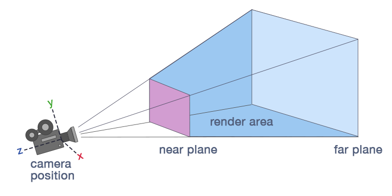

シーン エディターでの移動
初級 レベル デザイナー
シーン内を移動し、エディター カメラの視点を変えることができます。左下にある XYZ 軸が、3D 空間内での向きを示します。

シーン内を動き回る
シーン エディター内でエディター カメラを移動させるには複数の方法があります。
Tip
Shift キーを押したまま操作すると移動の速度が上がります。
飛ぶ
カメラの向きを変えるには、右マウス ボタンを押したままマウスを動かします。カメラを移動するには、右マウス ボタンを押したまま WASD キーを使用します。これは、多くのアクション ゲームのコントロールと似ています。
パン
右マウス ボタンと中央マウス ボタンを押したまま、マウスを動かします。
ドリー
ドリーする (カメラを前後に動かす) には、マウス ホイールを使用します。
周回
Alt キーと左マウス ボタンを押したまま、マウスを動かします。
回転の中心は、常に画面の中心です。中心点までの距離を調整するには、マウス ホイールを使用します。

エンティティに焦点を合わせる
エンティティを選択した後、F キーを押します。エンティティにズームインし、エンティティがカメラ エディターの中央に配置されます。
また、エンティティ ツリーのエンティティの隣にある虫眼鏡アイコンをクリックすることで、エンティティに焦点を合わせることもできます。

Tip
エンティティに焦点を合わせた後、Alt キーと左マウス ボタンを使用して周回させると、エンティティを調べることができます。
コントロールの表
| 操作 | コントロール |
|---|---|
| 移動 | 方向キー + 右マウス ボタン WASDQE キー + 右マウス ボタン |
| 見回す | 右マウス ボタン + マウスを移動 |
| パン | 中央マウス ボタン + 右マウス ボタン + マウスを移動 |
| 周回 | Alt キー + 左マウス ボタン |
| ズーム | マウス ホイール Alt キー + 右マウス ボタン + マウスを移動 |
| パン | 中央マウス ボタン + マウスを移動 |
| フォーカス | F (エンティティを選択して) |
Tip
シーン ナビゲーターのコントロールは、［Edit］>［Settings］の［Scene editor］>［Key bindings］で変更できます。

カメラ エディターの視点を変更する
シーン エディターの右上にあるビュー カメラ ギズモを使用して、カメラ エディターの視点を変更できます。

カメラを位置にスナップする
エディター カメラの角度を変更するには、ビュー カメラ ギズモの対応する面、辺、または頂点をクリックします。
| クリック | カメラの位置 |
|---|---|
| 面 | 選択した面を向きます |
| 辺 | 隣接する 2 つの面に対して 45° の方向を向きます |
| 頂点 | 隣接する 3 つの面に対して 45° の方向を向きます |
カメラの位置
Note
このページでは、シーン エディターのカメラを使用する方法について説明します。ゲームでカメラを使用する方法については、「グラフィックス - カメラ」を参照してください。
シーン エディター カメラのオプションを表示するには、シーン エディターの右上にあるカメラ アイコンをクリックします。

透視投影ビューと正投影ビュー
透視投影ビューは、シーン内のオブジェクトの「現実世界」の遠近法です。このビューでは、カメラに近いオブジェクトほど大きく表示され、同じ長さの線が、実際と同じように、短縮遠近のために異なる長さで表示されます。
正投影ビューでは、カメラからの距離に関係なく、オブジェクトは常に同じサイズで表示されます。平行線は交わることがなく、消失点はありません。正投影ビューでは、オブジェクトが正確に整列されているかどうかを簡単に確認できます。


また、カメラが自分を向いているときにビュー カメラ ギズモをクリックすることによって、透視投影ビューと正投影ビューを切り替えることもできます。
視野
カメラの視野を変更できます。カメラの錐台が変化し、シーンのズームインとズームアウトの効果があります。高い値 (90 以上) に設定すると、引き延ばされた「魚眼レンズ」ビューになります。既定の設定は 45 です。
近平面と遠平面
近平面と遠平面により、カメラのビューが開始および終了する位置が決まります。
近平面は、カメラが表示できる最も近いポイントです。既定の設定は 0.1 です。このポイントより手前にあるオブジェクトは描画されません。
遠平面は、描画距離とも呼ばれ、カメラが表示できる最も遠いポイントです。このポイントより遠くにあるオブジェクトは描画されません。既定の設定は 1000 です。
Game Studio は、近平面と円平面の間の領域をレンダリングします。

カメラ速度
カメラ速度の設定は、エディター内をカメラが移動する速さを変更します。